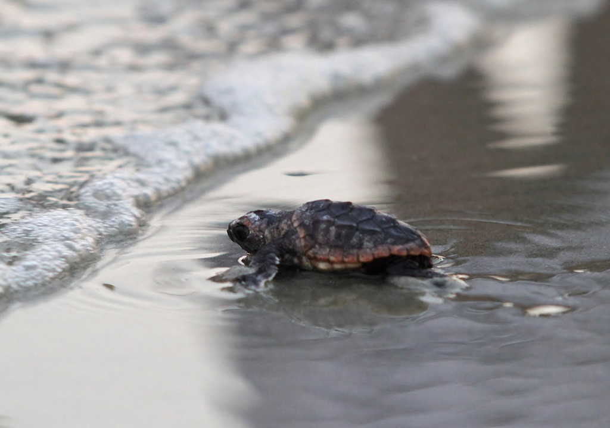

What are Sea Turtles?
Sea Turtles are among the oldest reptiles on Earth and have remained unchanged for around 110 million years.
They belong to the Cheloniidae and Dermochelyidae families and have been listed as an endangered species.
Their habitaats are open water and coasts and are known to live in the ocean except when it is breeding season where they will come to the coast to lay eggs.
Introduction to Sri Lankan Turtles

Sri Lanka is home to five out fo the seven species of sea turtles in the world.They are the Green Turtle (Chelonia mydas),
Hawksbill Turtle (Eretmochelys imbricata), Olive Ridley (Lepidochelys olivacea), Loggerhead (Caretta caretta) and Leatherback (Dermochelys coriacea).
These Sea turtles are known as "Kesbewa" in Sinhala and "Amai" in Tamil.
The Journey of a Sea Turtle

Sea turtles are know to make long migrations between their feeding and breeding areas. Leatherbacks are known to travel an average of nealry 4000km each way.
After mating in the sea. the females come ashore to lay their egss in the coastal area.
They dig a hole in the sand, deposit the eggs cover it back up and return to the sea.
It takes around 60 days for the egss to hatch and thr baby sea turtles make their way to the sea at night where they often face dangers such as sea birds and crabs.
Only a few survive upto childhood estimated to be aorund from 1 in 1000 or even 1 in 10,000.